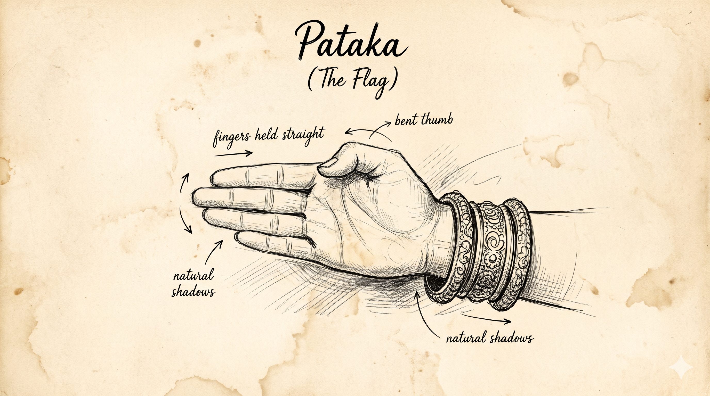

01 / 09 • ASAMYUTHA HASTHA
ROOT MUDRA 01
PATHAKA പതാക
SIGNIFICATION
The Flag / Royal Splendor
Formed by bending the ring finger inwards to touch the thumb, while keeping the other fingers erect. In Kathakali, Pathaka represents the Sun, King, Elephant, Lion, Bull, Waves, Fire, Night, and Divine Benediction.
Sun
King
Elephant
Fire
Benediction